Control Circuit 2026 › Tutorial › Chapter 3
In the previous chapter we learned that wires are the building blocks the circuit engines use to map how symbols, terminals, nodes and Interruptions are connected.
In this chapter we continue the journey towards logic-based wire numbering and design rule checking, by giving wires three pieces of information.
You can add wires at will and leave them as plain drawing artefacts. For them to become smart, they need a Wire Group as a minimum, because that is what the connectivity and numbering engines work from. A Net Name and a Wire Type are optional.
| Value | What it says | Examples | What it makes possible |
|---|---|---|---|
| Net Name optional | A label for the network the wire belongs to. | ESTOP, PWR, MODE | Readable reports and messages, and a CE cross-check that two separate networks do not share a label. |
| Wire Group required | Which potential the wire belongs to. | 24VDC, L1, N | Wire numbering automation. The engine gathers every wire in a group and numbers them in sequence by your numbering rule. |
| Wire Type optional | What the wire is: its size and colour. | 1.5mm² Black, 1.0mm² Blue | Wire thickness and colour on the sheet and in outputs, and the wire type shown in the Wire Schedule. |
A wire already knows what it is connected to. These three values say what it is. There are three ways to put them on a wire: the Wiring section of the wire's properties, the right-click menu on a selection, and Mass Wire Update (Alt+M). Parts 1 to 3 set up the libraries behind the values; Part 4 walks through each of the three ways.
The top of the Wiring menu holds everything in this chapter and the next. We will work through the items as you meet them in your design workflow.
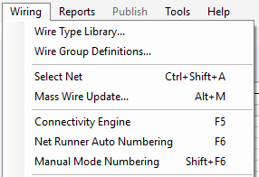
From the Wiring menu choose Wire Type Library….
When you create a new project you choose between mm² and AWG wire sizes, and the library is seeded for you with a range of common sizes and typical colours (in mm² mode, from 0.05mm² up to 120.0mm²; in AWG mode, from AWG 30 up to 4/0). The title bar tells you which mode you are in. You can customise the list as you need.
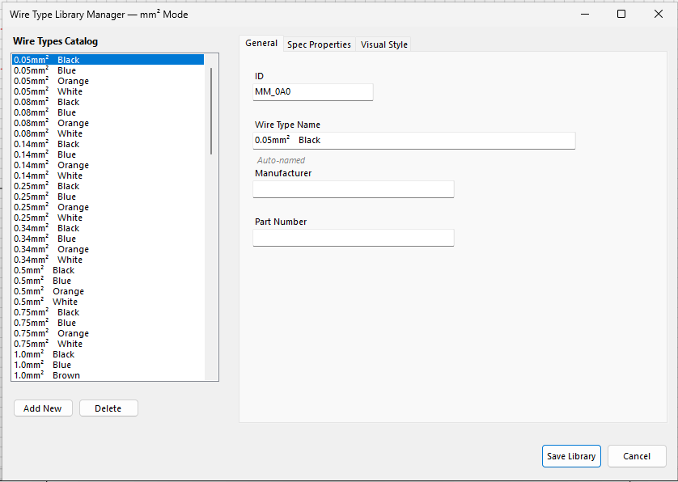
On this tab you can change the details of an existing entry, including the name it is displayed under.
You may also record a default Manufacturer and Part Number, if you have a house standard that must be followed.
The small italic Auto-named under the name means the name follows the size and colour: change either and the name changes with it. Type a name of your own and the entry stops being auto-named.
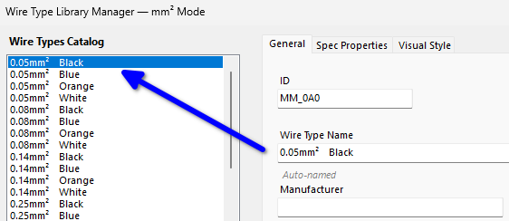
Select the wire type you would like to base the new one on, say 1.0mm² Black, then press Add New. A new entry is created, starting as a copy of the one you selected, and it is selected for you.
To remove an entry, select it and press Delete. To keep everything you have done, press Save Library. To throw all your edits away, press Cancel.
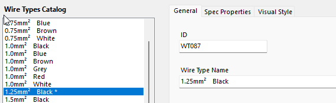
The order of the list is not set by a wire type's name, but by its size, the CSA (cross-sectional area) set on the Spec Properties tab. A size you type in yourself with Custom… slots in at its true position: 1.25mm² sits between 1.0 and 1.5.
A custom size, one that is not among the standard sizes the library ships with, is marked with an * asterisk after its name. It is simply a visual clue for you.
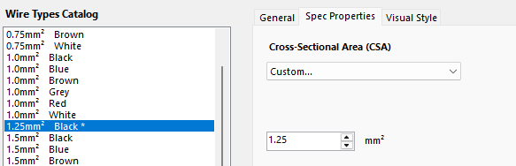
As the name suggests, this is how the wire looks on the sheet and in rendered outputs: the normal print job, the Web Portal and Smart PDF. A blue-sheathed wire can literally be drawn blue, with a thickness that suits it.
It is entirely optional. Display Thickness is a visual-only property and has no relation to the electrical size of the wire.
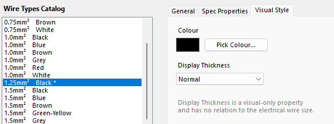
From the Wiring menu choose Wire Group Definitions….
Wire Groups define the various potentials, the voltages, found in your schematic. They are used to collect together every wire in a group so that the numbering engine has a solid basis for numbering the wire markers across the whole circuit.
Every engineer and company has a house standard for wire numbering. Some are standards-based, some are unique and customised. Automatic wire numbering is optional: it is a feature that is there when you want it.
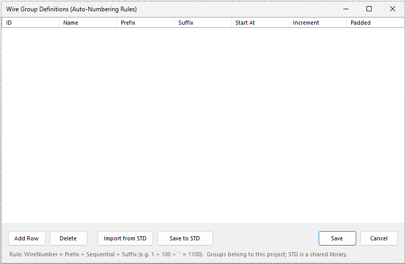
On a fresh installation you have two ways to get started.
Press Save to keep them in this project.
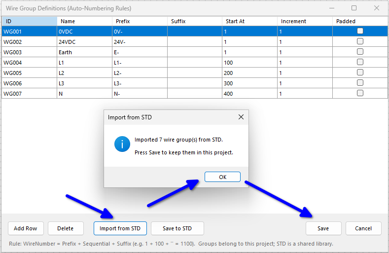
Once you have set up what is, in effect, your house standard, press Save to STD. That stores the configuration so you can import it into any other project later.
The Start At, Increment and Padded columns decide how the numbers run. They come into their own when we number wires, in a later chapter.
Now to put the libraries to work. Here are the three ways to give wires their values, from a single wire to every wire on the sheet.
In the simplest form, create a wire between any two valid destinations (nodes, symbol pins and so on), press Alt+W to auto-wire, then click the wire you have just made.
In the Properties panel, the Wiring section gives you direct access to all three values: Net Name, Wire Group and Wire Type.
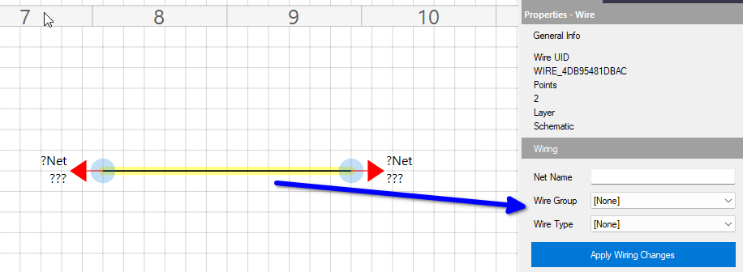
Give the wire any Net Name you fancy. It is optional, and it labels this one network, so every separate network should have a name of its own. The Wire Group is the value the numbering tools gather wires by, later on.
If you followed Part 3, your wire groups are in the Wire Group drop-down. Choose one.
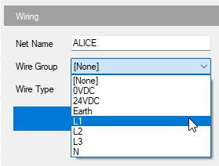
This one is entirely optional. One reason to set it is that it lets a visual style be applied: the colour and thickness from the Visual Style tab of the library.
Then press Apply Wiring Changes. Nothing is entered until you do.
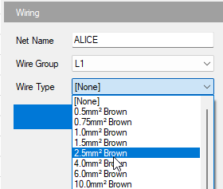
The wire is now brown, and a Recent Wire Types link appears under the Apply button. It holds a Wire Group and Wire Type together, and keeps the last ten you used. Click one on the next wire and it fills in both drop-downs for you; then press Apply.
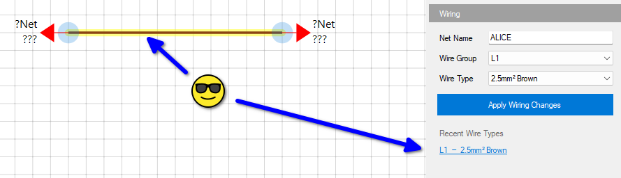
As we said, wire styling is both optional and configurable. It can be shown or hidden at any time, on the sheets and in printed or rendered outputs.
Open Project Properties (Alt+P) from the Project menu, go to the Node Styles tab, and look at the Wire Visual Styles box at the bottom right:
Press Save Changes to commit. You will be asked to save the project when you leave the sheet or close the project, so that the settings are written to disk.
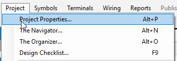
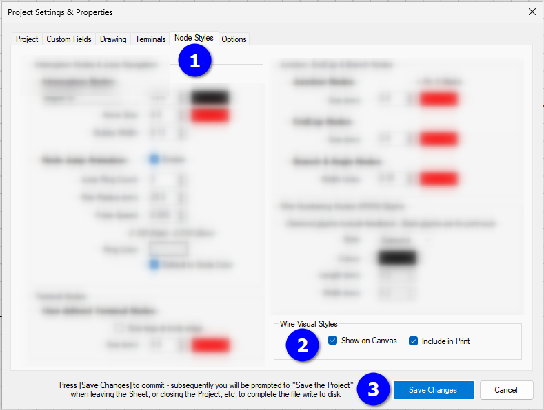
Suppose we now add some nodes and some new wires, and end up with something like this. The new wires have no attributes yet.
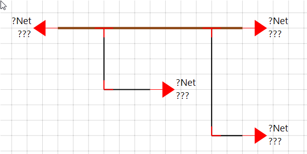
We do not need to go around selecting each new wire and applying its values one at a time.
Select the brown wire we already defined, right-click and choose Select Net. That finds every wire connected in the same network and selects them all. Right-click one of them again and the top of the menu counts what is selected (here 7 wires), and shows mixed for any value they do not all share.
From here you have several options:
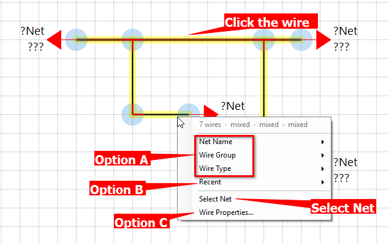
Choose Net Name, Wire Group or Wire Type from the menu and pick a value. It is applied to every selected wire.
Choose Recent and pick one of the pairs, such as L1 — 2.5mm² Brown. The Wire Group and the Wire Type are both applied in one hit. (Net Name is set from its own entry in the menu.)
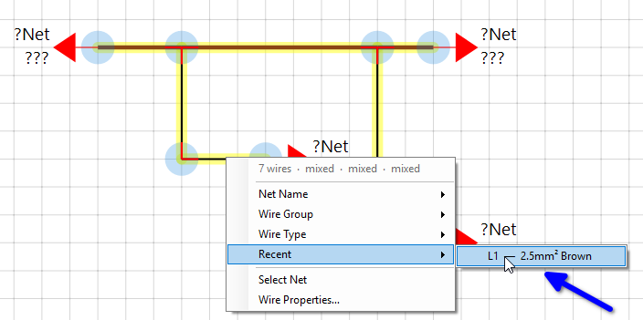
Choose Wire Properties… to open the most flexible choice, the Mass Wire Update dialog, which sets all three in one go. More on that dialog in a moment.
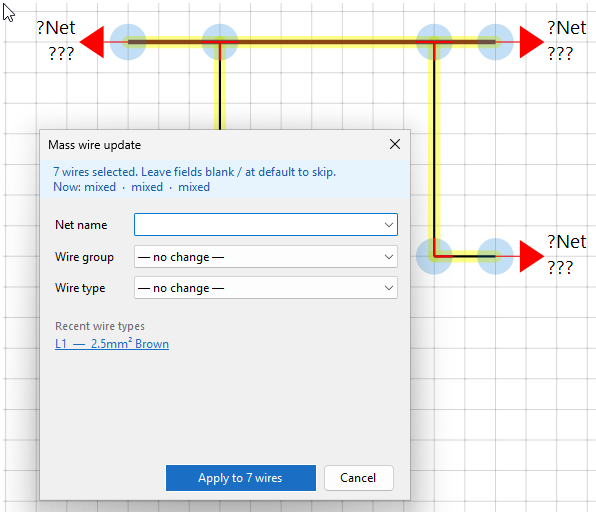
In a couple of clicks, two wires or twenty or more are updated.
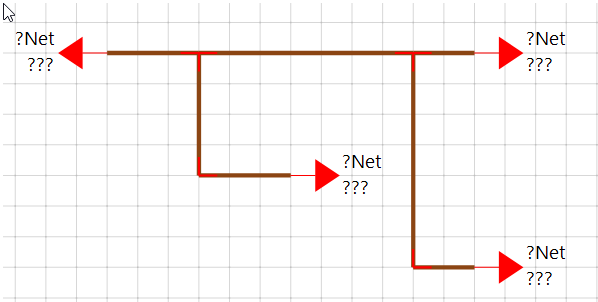
Suppose you have built your whole circuit first: symbols, terminals, nodes, comments, details, the lot. Now you want to give the wires their values. This is where Mass Wire Update stretches its legs.
Select the wires in any of the usual ways: drag over them, or hold Ctrl and click to pick wires that are not next to each other. You can even press Ctrl+A to select everything on the sheet, wires, symbols and terminals alike. Then press Alt+M.
Anything selected that is not a wire is ignored, but you are asked first, and told how many of each.
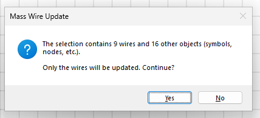
Here is the same dialog again. Anything you leave blank, or at no change, is skipped, so you can set one value or all three in a single hit.
A good rhythm: select all your L1 wires and apply, then all your L2 and apply, then all your 24VDC and apply.
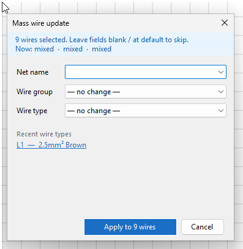
In the next chapter we build a simple circuit and meet the Connectivity Engine, which checks that every wire, node and pin is properly connected. Wire numbering follows after that. Until then, the reference topics behind this chapter are in the program's help (F1): Wire Type Library and Wire Group Definitions.